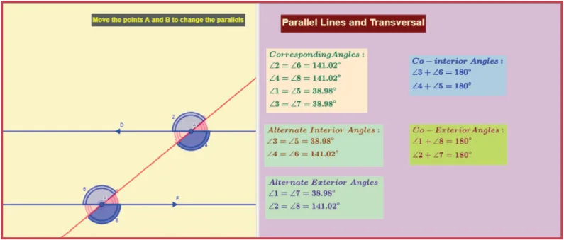
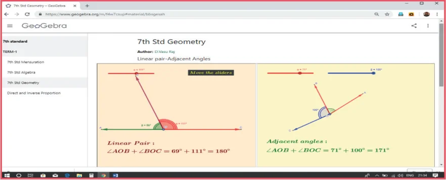
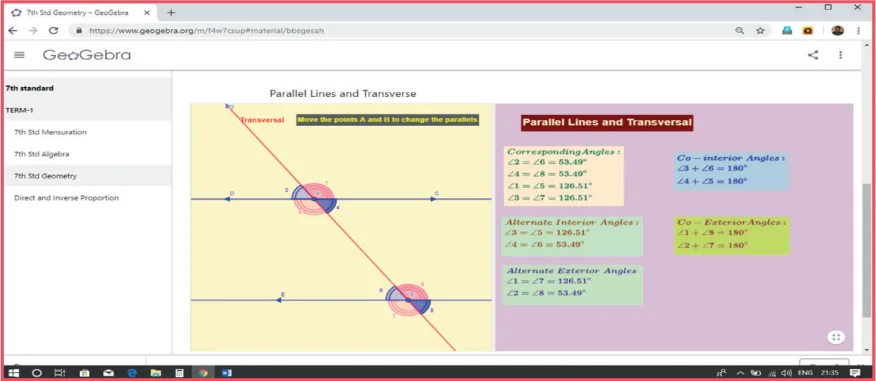

Expected Result is shown in this picture

Step – 1 : Open the Browser type the URL Link given below (or) Scan the QR Code. GeoGebra work sheet named “7th std Geometry” will open. There are two activities 1. Linear pair- Adjacent Angles, 2. Parallel lines and Transverse.
In the second activity “Parallel lines and Transverse” move the points A and B and observe the different angles formed by the transverse line.
Step - 2 : Move the sliders to get, Parallelogram or Rectangle or Square and see the points given and observe.
Step 1

Step 2

Browse in the link
Geometry: https://ggbm.at/bbsgesah
or Scan the QR Code.